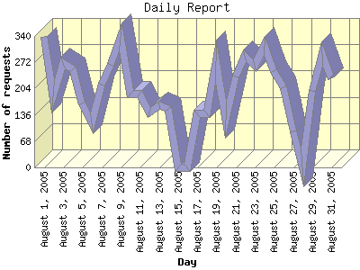

Report generated by Analog 6.0 and Report Magic 2.21
|
Web Server Statistics for "Harish Narayanan (hnarayan) - August 2005" Report generated by Analog 6.0 and Report Magic 2.21 |
The Daily Report identifies the activity for each day within the reporting period. Remember that one page hit can result in several server requests as the images for each page are loaded.

| Day | Number of requests | Number of bytes transferred | Percentage of the bytes | Percentage of the requests | |
|---|---|---|---|---|---|
| 1. | August 1, 2005 | 337 | 11.390 MB | 5.61% | 5.59% |
| 2. | August 2, 2005 | 184 | 5.069 MB | 2.50% | 3.05% |
| 3. | August 3, 2005 | 271 | 7.156 MB | 3.52% | 4.49% |
| 4. | August 4, 2005 | 254 | 8.831 MB | 4.35% | 4.21% |
| 5. | August 5, 2005 | 166 | 8.995 MB | 4.43% | 2.75% |
| 6. | August 6, 2005 | 113 | 2.863 MB | 1.41% | 1.87% |
| 7. | August 7, 2005 | 214 | 6.670 MB | 3.28% | 3.55% |
| 8. | August 8, 2005 | 265 | 9.253 MB | 4.56% | 4.39% |
| 9. | August 9, 2005 | 337 | 6.979 MB | 3.44% | 5.59% |
| 10. | August 10, 2005 | 190 | 2.779 MB | 1.37% | 3.15% |
| 11. | August 11, 2005 | 191 | 3.260 MB | 1.60% | 3.17% |
| 12. | August 12, 2005 | 143 | 2.507 MB | 1.23% | 2.37% |
| 13. | August 13, 2005 | 161 | 4.070 MB | 2.00% | 2.67% |
| 14. | August 14, 2005 | 152 | 6.319 MB | 3.11% | 2.52% |
| 15. | August 15, 2005 | 0 | 0.000 B | 0.00% | 0.00% |
| 16. | August 16, 2005 | 1 | 1.227 KB | 0.00% | 0.02% |
| 17. | August 17, 2005 | 139 | 4.027 MB | 1.98% | 2.30% |
| 18. | August 18, 2005 | 140 | 2.436 MB | 1.20% | 2.32% |
| 19. | August 19, 2005 | 274 | 5.223 MB | 2.57% | 4.54% |
| 20. | August 20, 2005 | 124 | 1.418 MB | 0.70% | 2.06% |
| 21. | August 21, 2005 | 235 | 7.395 MB | 3.64% | 3.90% |
| 22. | August 22, 2005 | 289 | 11.765 MB | 5.79% | 4.79% |
| 23. | August 23, 2005 | 264 | 10.591 MB | 5.21% | 4.38% |
| 24. | August 24, 2005 | 315 | 15.913 MB | 7.84% | 5.22% |
| 25. | August 25, 2005 | 249 | 9.141 MB | 4.50% | 4.13% |
| 26. | August 26, 2005 | 208 | 2.826 MB | 1.39% | 3.45% |
| 27. | August 27, 2005 | 94 | 15.563 MB | 7.66% | 1.56% |
| 28. | August 28, 2005 | 0 | 0.000 B | 0.00% | 0.00% |
| 29. | August 29, 2005 | 199 | 8.617 MB | 4.24% | 3.30% |
| 30. | August 30, 2005 | 293 | 15.402 MB | 7.58% | 4.86% |
| 31. | August 31, 2005 | 230 | 6.627 MB | 3.26% | 3.81% |
Most active day August 9, 2005 : 149 pages sent. 337 requests handled. 11,943,026.00 served.
Daily average: 208 requests handled. 7.003 MB served.
This report was generated on September 10, 2005 13:35.
Report time frame August 1, 2005 00:00 to August 31, 2005 23:43.
| Web statistics report produced by: | |
 Analog 6.0 Analog 6.0 |  Report Magic 2.21 Report Magic 2.21 |